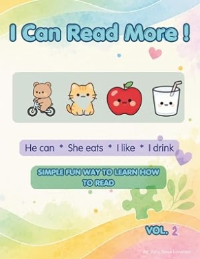

WHAT THIS SERIES SUPPORTS
The I Can Read series is designed to make early reading feel approachable, predictable, and encouraging.
Short, clear sentence patterns help children focus on words and meaning without unnecessary complexity.
Repeated words and familiar patterns provide opportunities to practice and strengthen recognition.
Pictures and familiar concepts help connect written language with meaning and understanding.
Small successes can help children feel more comfortable participating, practicing, and developing as readers.
I CAN READ SERIES
The I Can Read series uses repetition, simple sentences, familiar vocabulary, and engaging pictures to support early reading, language development, and confidence.
Early-reading books designed to make reading approachable, engaging, and encouraging.

A first reading book using simple sentence patterns, repetition, familiar words, and picture choices to encourage early reading and language development.
View on Amazon
The next step in the series, introducing new sentence patterns and everyday vocabulary while continuing to build confidence through repetition and visual support.
View on Amazon